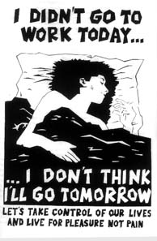

Submitted on Wed, 09/14/2005 - 10:42pm
Disclaimer - The following article is reposted here because it is an issue with some relevance to the IWW. The views of the author do not necessarily agree with those of the IWW and vice versa.
New Service Cuts Scheduled for September 24?
Many riders have noticed that they are waiting longer and longer for the bus, and that they are more crowded when they finally show up. But trying to figure out what is going on is not so easy.
Last week, Muni quietly posted a notice on their website that a new round of service cuts is scheduled to take effect on September 24. This posting included two charts, one showing "changes in routes, and hours and days of service" for several lines, and an even longer chart showing lines that will have fewer buses running at longer intervals. These charts had been up on Muni's website, in one form or another, for months, although without the specific implementation date.
Then, sometime over the weekend, the longer chart showing which lines will have fewer buses disappeared from the website. Has Muni suddenly had a change of heart? Did they find a big pile of cash? Or are they trying to hide something from us? We don't know. And who knows what will be on Muni's website when you read this bulletin. Check it out yourself, at http://www.sfmuni.com/cms/rptpub/SFMuniProposedServiceAdjustments.htm#routing.
Submitted on Wed, 09/07/2005 - 3:08am
Disclaimer - The following article is reposted here because it is an issue with some relevance to the IWW. The views of the author do not necessarily agree with those of the IWW and vice versa.
 By Steve Zeltzer - September 5, 2005
By Steve Zeltzer - September 5, 2005
NWA-AMFA striking mechanics were joined by hundreds of other other airline workers and other trade unionists at San Francisco International Airport on Labor Day 2005. Strike supporters including ILWU Local 10 president Trent Willis spoke at the rally and was joined with dozens of ILWU member from Local 10 and 34. Airline mechanics from American Airlines, United Airlines as well as flight attendants not only joined the rally but spoke in solidarity. Willis warned the rest of the labor movement that they should not fail to back the NWA mechanics because the same thing could happen to other unions. He also said that the unions had the power to shut the airport down and that might become a necessity.
JoAnne Kazemi, the SFO Base Representative of the Professional Flight Attendants Association PFAA which represents the thousands of NWA flight attendants reported that some strike supporters had been furloughed for supporting the picket line and that NWA was using scab flight attendants www.pfaa.com. She also said that NWA along was seeking to replace US based flight attendants on Asian flights with Asian flight attendents at lower standards and wages. This is already happened with the outsourcing of maintenance for NWA jets that are on routes to China. They will be serviced by non-union mechanics at wages substantially lower than US based wages. The issue of outsourcing was also raised by author and UAW-NWU 1981 Chair Jack Rasmus. Rasmus reported that over 8 million jobs have been outsourced in the last few years and many of these were good paying union jobs.
Submitted on Wed, 08/31/2005 - 2:31am
Disclaimer - The following article is reposted here because it is an issue with some relevance to the IWW. The views of the author and the publisher do not necessarily agree with those of the IWW and vice versa. (Plus, they gave us a plug, so it's only right to return the favor!)
Originally published on www.indybay.org
Victory! We are happy to report the Cheesecake Factory has finally settled and workers will finally get their rightful piece of the pie. For three years, workers were denied breaks in the busiest and most profitable restaurant in the City. After two years of actions, worker organizing and public pressure, we won back pay and a new system! Workers across the state will get a $4.5 million settlement.
Through the course of the campaign, they’ve also won increased wages for the breaker position, instead of paying the breaking worker to take a break. We’ve built a solid crew in the kitchen who are standing up to abusive managers. In perhaps unrelated news, former General Manager Jeff Reznick has been transferred to Pensacola, a little town in mid-Florida. We invite you to celebrate with us and tell the press:
Submitted on Tue, 08/30/2005 - 3:14pm
Disclaimer - The following article is reposted here because it is an issue with some relevance to the IWW. The views of the author and the publisher do not necessarily agree with those of the IWW and vice versa.
Rachel Gordon, San Francisco Chronicle Staff Writer - Tuesday, August 30, 2005 - Original Article.
 A coalition of activists involved in left-leaning political causes in San Francisco called on Municipal Railway passengers to refuse to pay their fares starting Thursday, the day the price for a ride is set to go up.
A coalition of activists involved in left-leaning political causes in San Francisco called on Municipal Railway passengers to refuse to pay their fares starting Thursday, the day the price for a ride is set to go up.
"We refuse to pay more for less service," said Riva Enteen, one of the organizers of the planned strike who publicized their plans at a Mission District rally Monday. "These fare hikes will affect poor people the most."
Starting Thursday, the regular cash fare for bus and train service will go up to $1.50, a 25-cent boost, and the cost of a cable car ride will nearly double to $5. The cash fare for seniors, the disabled and youth will increase 15 cents, to 50 cents.
Submitted on Mon, 08/29/2005 - 2:40pm
Disclaimer - The following article is reposted here because it is an issue with some relevance to the IWW. The views of the author and the publisher do not necessarily agree with those of the IWW and vice versa.
Suzanne Herel and Heather Knight, Chronicle Staff Writers - San Francisco Chronicle, Monday, August 29, 2005.
(08-29) 09:47 PDT San Francisco (SF Chronicle) -- A number of custodians, cafeteria workers and secretaries for the San Francisco Unified School District made good on their threat to call in sick this morning, the first day of school, to underscore their dissatisfaction with their union’s stalled contract negotiations.
District spokeswoman Lorna Ho said the absences were not expected to cause a significant disruption. “We planned for the worst when we heard there might be a sick-out,” Ho said.
She said it was too early to tell how widespread the action was. “We clearly do have some people at the central office who are not here,” she said.
All the custodians, secretaries and cafeteria workers at Malcolm X Academy elementary school in the Bayview were absent today, so volunteers were answering phones and serving breakfast in the cafeteria.